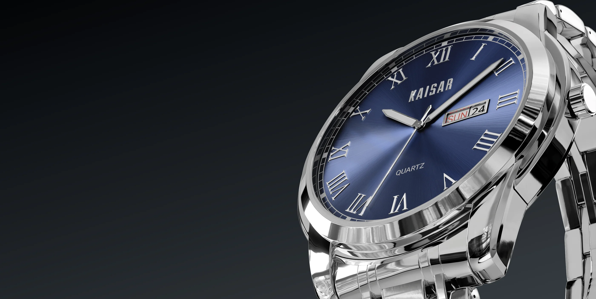
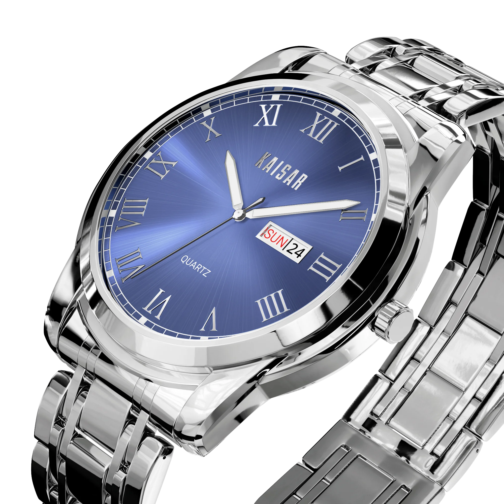
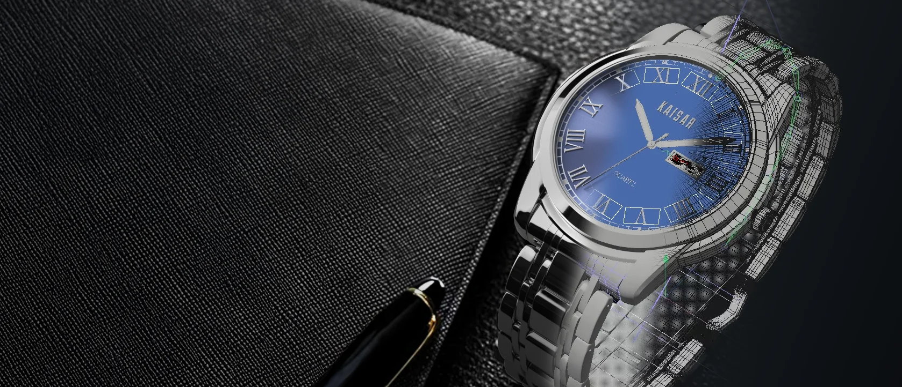
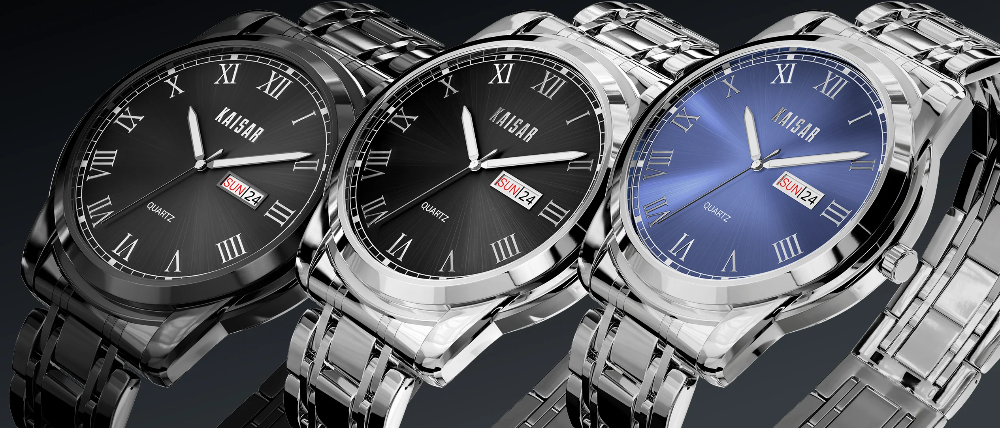
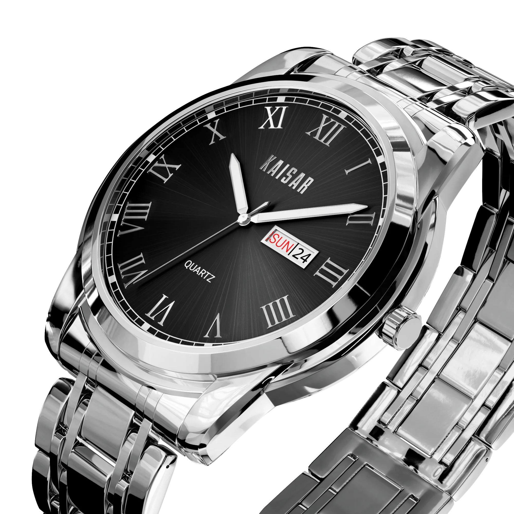
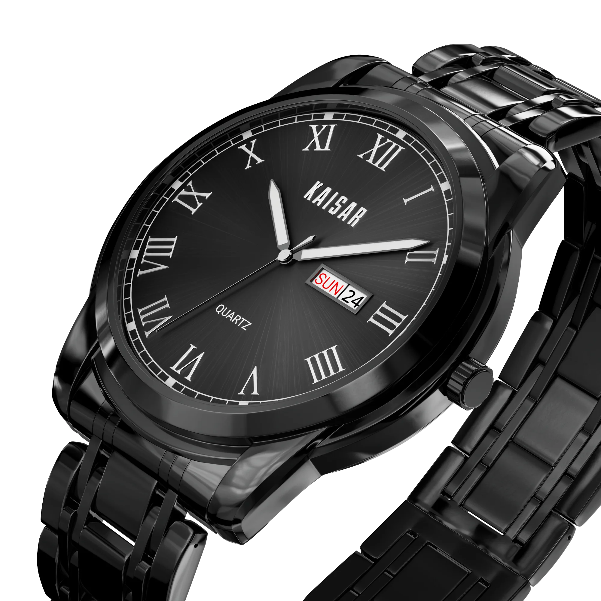

CONTEXT
In haute horlogerie, value lives in fractions of a millimeter. Kaisar was designed as a contemporary automatic luxury timepiece combining an architectural fluted bezel, faceted Roman numeral indices, a brushed stainless-steel bracelet, and an exhibition caseback. Luxury watch brands cannot rely on standard CGI: horology collectors and luxury buyers scrutinize light falloff across hand-polished chamfers, the anisotropy of brushed steel links, and the anti-reflective double-coating of sapphire crystals.

THE PROBLEM
Standard commercial photography cannot capture micro-mechanical tolerances without days of focus stacking and dust retouching.
Traditional macro lens photography flattens depth and struggles with high-contrast specular reflections on polished steel. Furthermore, producing physical prototypes for every dial colorway and metallurgical finish creates weeks of manufacturing delays. Kaisar required a digital twin capable of two opposing extremes: delivering offline raytraced 8K catalog stills with microscopic material truth, while running interactively at 60 fps inside Unreal Engine 5 for real-time client reviews and virtual product showcases.

OBJECTIVES
Three exacting standards defined the horological visualization architecture:
CONSTRAINTS
Anisotropic Light Directionality
Brushed stainless steel scatters light along directional grain lines. Radial brush patterns on the bezel and linear brushing on bracelet links required tangent-space micro-normal controls.
Internal Glass Dispersion & Fresnel
The synthetic sapphire crystal features dual anti-reflective (AR) coatings with a subtle blue/magenta chromatic tint and an exact refractive index (n = 1.77).
Mechanical Kinematics & Sub-Assemblies
The watch consists of 48 individual micro-components (bezel, crystal, dial, hands, winding stem, crown, screw-down caseback, bracelet links) that must articulate without mesh intersection.
Dual-Engine Asset Optimization
Geometry had to support high-density subdivision for offline raytracing while maintaining optimized LODs for smooth 60 fps playback in Unreal Engine 5.
PROCESS
Sub-D Hard-Surface Modeling
Constructed all case and bracelet components using pure quad topology, edge weighting, and support loops to guarantee artifact-free curvature under macro lighting.
Procedural Horology PBR Shaders
Engineered custom roughness-metallicity networks in Substance 3D and Redshift simulating 316L surgical-grade stainless steel with micro-scratches and chamfered polish.
Dial Variation & Micro-Pattern Exploration
Modeled and shaded multiple dial finishes (guilloché texture, meteorite sunburst, and deep matte anthracite) with applied faceted indices.
Unreal Engine 5 Lumen & Nanite Staging
Migrated assets into Unreal Engine 5, establishing calibrated real-time studio lighting, depth of field, and interactive orbit cameras.

KEY DECISIONS
Micro-Bevels over Smooth Shading
Modeled physical micro-chamfers on every edge rather than relying on bump maps, ensuring specular highlights realistically catch light at steep viewing angles.
Decoupled Dial & Bezel Material System
Segmented the watch into modular material channels, enabling instant swaps between dial colorways, bezel finishes, and strap combinations without re-rendering the chassis.
Hybrid Pipeline: Offline Redshift + Real-Time UE5
Provided the client with offline 8K hero plates for print advertising alongside an interactive Unreal Engine 5 scene for virtual showroom presentations.
Optical Macro Sensor Calibration
Tuned virtual focal lengths to 85mm and 100mm macro equivalents with physical aperture blades to produce authentic lens bokeh and horological scale perception.

RESULTS


LEARNINGS
“In luxury horology, lighting is not about illumination — it is about revealing geometry. The breakthrough came when we stopped lighting the watch like a product and started lighting it like a set of polished mirrors. Once each chamfer had its own dedicated highlight card, the craftsmanship instantly jumped from ‘good 3D’ to genuine Swiss luxury.”